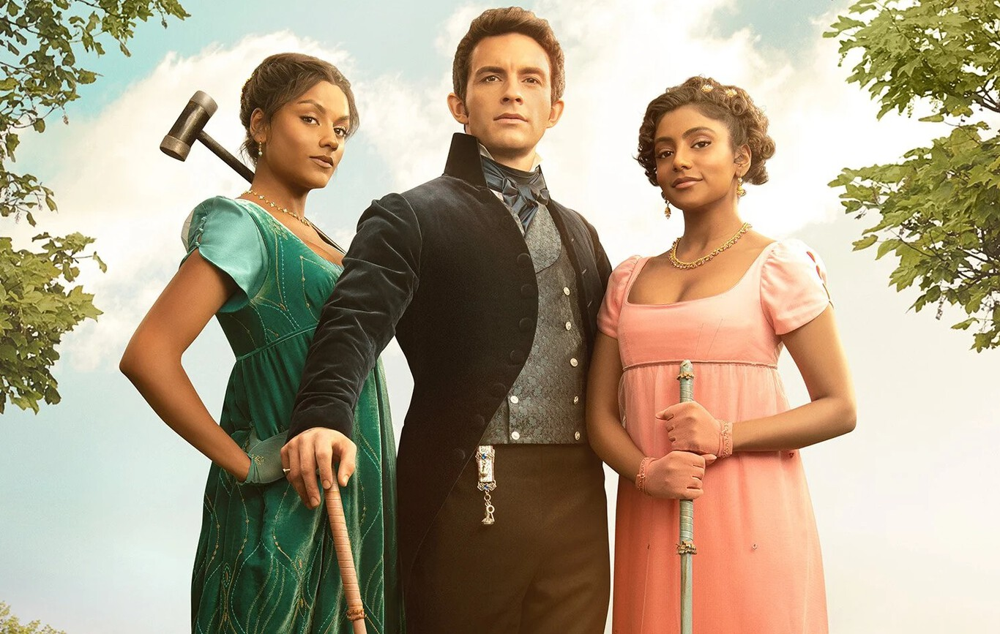

La pareja formada por Daphne y Simon ya no es protagonista, sino el hermano de ella, Anthony, Lord Bridgerton, el díscolo vizconde al que da vida Jonathan Bailey. Según el argumento de la novela, Anthony elige esposa, Edwina Sheffield, pero tendrá que pelear con la hermana mayor de Edwina, Kate, para convencerla de que ya ha dejado de ser un díscolo y un loco soltero. ¿Lo conseguirá? Estaremos ahí para verlo.
A poco más de la mitad de la serie, se muestra cómo Anthony y Kate comparten un apasionado momento después de que la joven es picada por una abeja y el vizconde con tal de que el veneno no haga efecto, succiona el veneno del área afectada con su boca, lo cual logra que ambos se acerquen más físicamente.
El triángulo amoroso entre las hermanas Sharma y Anthony Bridgerton fue el centro de la temporada dos; sin embargo, en el libro 'El vizconde que me amó', esto no es tan dramático. El joven de alta sociedad sí coquetea con Edwina, pero a diferencia de la serie, no llegan a comprometerse y por ende tampoco hay ceremonia de boda.
En el último capítulo de la segunda temporada, Anthony le confiesa a Kate que la ama y le pide que se case con él después de sufrir un accidente al montar a caballo; sin embargo, en la historia literaria existen cambios respecto a esto.